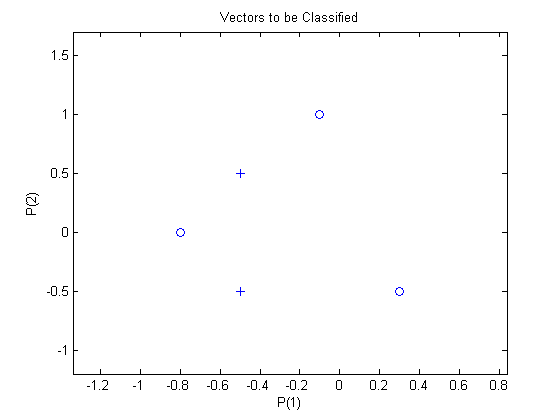
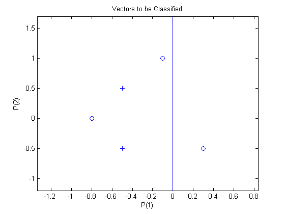

Linearly Non-separable Vectors
A 2-input hard limit neuron fails to properly classify 5 input vectors because they are linearly non-separable.
Copyright 1992-2002 The MathWorks, Inc. $Revision: 1.15 $ $Date: 2002/03/29 19:36:08 $
Each of the five column vectors in P defines a 2-element input vectors, and a row vector T defines the vector's target categories. Plot these vectors with PLOTPV.
P = [ -0.5 -0.5 +0.3 -0.1 -0.8; ...
-0.5 +0.5 -0.5 +1.0 +0.0 ];
T = [1 1 0 0 0];
plotpv(P,T);
The perceptron must properly classify the input vectors in P into the categories defined by T. Because the two kinds of input vectors cannot be separated by a straight line, the perceptron will not be able to do it. NEWP creates a perceptron.
net = newp([-40 1;-1 50],1);
Add the the neuron's initial attempt at classification to the plot. The initial weights are set to zero, so any input gives the same output and the classification line does not even appear on the plot.
hold on
plotpv(P,T);
linehandle=plotpc(net.IW{1},net.b{1});ADAPT returns a new network object that performs as a better classifier, the network outputs, and the error. This loop allows the network to adapt for 3 passes, plots the classification line, and stops after 25 iterations.
net.adaptParam.passes = 3;
linehandle=plotpc(net.IW{1},net.b{1});
for a = 1:25
[net,Y,E] = adapt(net,P,T);
linehandle = plotpc(net.IW{1},net.b{1},linehandle); drawnow;
end;Note that zero error was never obtained. Despite training, the perceptron has not become an acceptable classifier. Only being able to classify linearly separable data is the fundamental limitation of perceptrons.